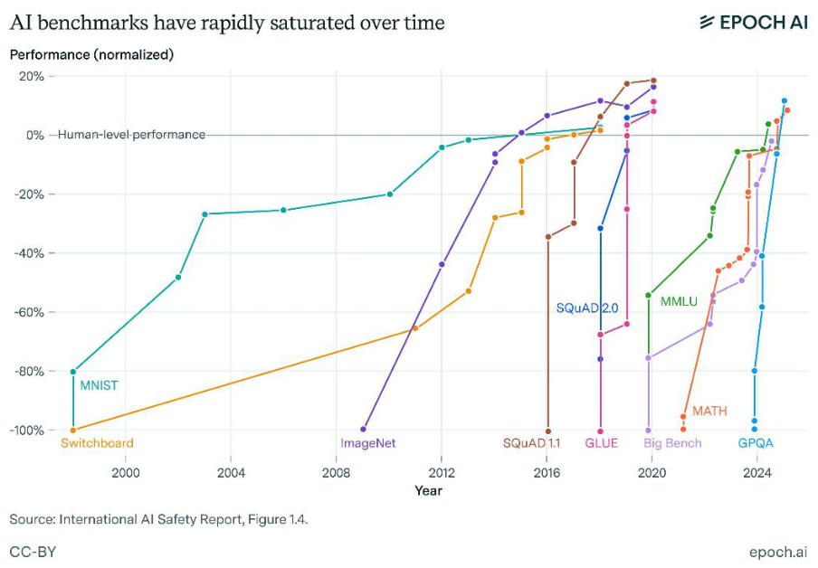

17 Evaluation
- How language models are evaluated during and after RLHF
- The evolution from chat-focused to reasoning-focused evaluations
- Why prompting format dramatically affects benchmark performance
Evaluation is the set of techniques used to understand the quality and impact of the training processes detailed in this book. Evaluation is normally expressed through benchmarks (examples of popular benchmarks include MMLU, GPQA, SWE-Bench, MATH, etc.), which are discrete sets of questions or environments designed to measure a specific property of a model. Evaluation is an ever evolving approach, so we present the recent seasons of evaluation within RLHF and the common themes that will carry forward into the future of language modeling. The key to understanding language model evaluation, particularly with post-training, is that the current popular evaluation regimes represent a reflection of the popular training best practices and goals. While challenging evaluations drive progress in language models to new areas, the majority of evaluation is designed around building useful signals for new models.
In many ways, this chapter is designed to present vignettes of popular evaluation regimes throughout the early history of RLHF, so readers can understand the common themes, details, and failure modes.
Evaluation for RLHF and post-training has gone a few distinct phases in its early history:
- Early chat-phase: Early models trained with RLHF or preference tuning targeted evaluations focused on capturing the chat performance of a model, especially relative to known strong models such as GPT-4. Early examples include MT-Bench [1], AlpacaEval [2], and Arena-Hard [3]. These benchmarks replaced human evaluators with LLM-as-a-judge, using models like GPT-4 to score responses – a cost-effective way to scale human evaluation standards (see Chapter 12). Models were evaluated narrowly and these are now considered as “chat” or “instruction following” domains.
- Multi-skill era: Over time, common practice established that RLHF can be used to improve more skills than just chat. For example, the Tülu evaluation suite included tasks on knowledge (MMLU [4], PopQA [5], TruthfulQA [6]), Reasoning (BigBenchHard [7], DROP [8]), Math (MATH [9], GSM8K [10]), Coding (HumanEval [11], HumanEval+ [12]), Instruction Following [13], and Safety (a composite of many evaluations). This reflects the domain where post-training is embraced as a multi-faceted solution beyond safety and chat.
- Reasoning & tools: The current era for post-training is defined by a focus on challenging reasoning and tool use problems. These include much harder knowledge-intensive tasks such as GPQA Diamond [14] and Humanity’s Last Exam [15], intricate software engineering tasks such as SWE-Bench+ [16] and LiveCodeBench [17], or challenging math problems exemplified by recent AIME contests.
Beyond this, new domains will evolve. As AI becomes more of an industrialized field, the incentives of evaluation are shifting and becoming multi-stakeholder. Since the release of ChatGPT, private evaluations such as the Scale Leaderboard [18], community-driven evaluations such as ChatBotArena [19], and third-party evaluation companies such as ArtificialAnalysis and Epoch AI have proliferated. Throughout this chapter we will include details that map to how these evaluations were implemented and understood.
#17.1 Prompting Formatting: From Few-shot to Zero-shot to CoT
Prompting language models is primarily a verb, but it is also considered a craft or art that one can practice and/or train in general [20]. A prompt is the way of structuring information and context for a language model. For common interactions, the prompt is relatively basic. For advanced scenarios, a well crafted prompt will mean success or failure on a specific one-off use-case.
When it comes to evaluation, prompting techniques can have a substantial impact on the performance of the model. Some prompting techniques – e.g. formatting discussed below – can make a model’s performance drop from 60% to near 0. Similarly, a change of prompt can help models learn better during training. Colloquially, prompting a model well can give the subjective experience of using future models, unlocking performance outside of normal use.
Prompting well with modern language models can involve preparing an entire report for the model to respond to (often with 1000s of tokens of generated text). This behavior is downstream of many changes in how language model performance has been measured and understood.
Early language models were only used as intelligent autocomplete. In order to use these models in a more open ended way, multiple examples were shown to the model and then a prompt that is an incomplete phrase. This was called few-shot or in-context learning [21], and at the time instruction tuning or RLHF was not involved. In the case of popular evaluations, this would look like:
# Few-Shot Prompt for a Question-Answering Task
You are a helpful assistant. Below are example interactions to guide your style:
### Example 1
User: "What is the capital of France?"
Assistant: "The capital of France is Paris."
### Example 2
User: "Who wrote the novel '1984'?"
Assistant: "George Orwell wrote '1984.'"
# Now continue the conversation using the same style.
User: "Can you explain what a neural network is?"
Assistant:Here, there are multiple ways to evaluate an answer. If we consider a question in the style of MMLU, where the model has to choose between multiple answers:
# Few-Shot Prompt
Below are examples of MMLU-style questions and answers:
### Example 1
Q: A right triangle has legs of lengths 3 and 4. What is the length of its
hypotenuse?
Choices:
(A) 5
(B) 6
(C) 7
(D) 8
Correct Answer: (A)
### Example 2
Q: Which of the following is the chemical symbol for Sodium?
Choices:
(A) Na
(B) S
(C) N
(D) Ca
Correct Answer: (A)
### Now answer the new question in the same style:
Q: Which theorem states that if a function f is continuous on a closed interval
[a,b], then f must attain both a maximum and a minimum on that interval?
Choices:
(A) The Mean Value Theorem
(B) The Intermediate Value Theorem
(C) The Extreme Value Theorem
(D) Rolle's Theorem
Correct Answer:To have a language model provide an answer here one could either generate a token based on some sampling parameters and see if the answer is correct, A, B, C, or D (formatting above like this proposed in [22]), or one could look at the log-probabilities of each token and mark the task as correct if the correct answer is more likely.
Let’s dig into these evaluation details for a moment. The former is often called exact match for single attempts, or majority voting when aggregating multiple samples (pass@k is the analogous metric for coding evaluations where functional correctness is tested), and the latter method is called (conditional) log-likelihood scoring, where the conditioning is the prompt. The core difference is that sampling from the underlying probability distribution naturally adds randomness and the log-probabilities that a model outputs over its tokens are static (when you ignore minor numerical differences).
Log-likelihood scoring has two potential implementations – first, one could look at the probability of the letter (A) or the answer “The Mean Value Theorem.” Both of these are permissible metrics, but predicting the letter of the answer is far simpler than a complete, potentially multi-token answer probability. Log-likelihood scoring is more common in pretraining evaluation, where models lack the question-and-answer format needed for exact match, while exact match is standard in post-training [23].
Exact match has different problems, such as requiring rigid format suffixes (e.g., The answer is:) or detecting answers anywhere in generated text (e.g., looking for (C) or the answer string itself). If the evaluation format does not match how the model generates, scores can plummet. Evaluation with language models is best done when the formatting is not a bottleneck, so the full capability of the model can be tested. Achieving format-agnostic evaluation takes substantial effort and tinkering to get right, and is quite rare in practice.
Returning to the history of evaluation. Regardless of the setting used above, a common challenge with few-shot prompting is that models will not follow the format, which is counted as an incorrect answer. When designing an evaluation domain, the number of examples used in-context is often considered a design parameter and ranges from 3 to 8 or more.
Within the evolution of few-shot prompting came the idea of including chain-of-thought examples for the model to follow. This comes in the form of examples where the in-context examples have written out reasoning, such as below (which later was superseded by explicit prompting to generate reasoning steps) [24]:
# standard prompting
Q: Roger has 5 tennis balls. He buys 2 more cans of tennis balls. Each can has 3
tennis balls. How many tennis balls does he have now?
A: The answer is 11.
Q: The cafeteria had 23 apples. If they used 20 to make lunch and bought 6 more,
how many apples do they have?
A: The answer is ...
# chain-of-thought prompting
Q: Roger has 5 tennis balls. He buys 2 more cans of tennis balls. Each can has 3
tennis balls. How many tennis balls does he have now?
A: Roger started with 5 balls. 2 cans of 3 tennis balls each is 6 tennis balls. 5
+ 6 = 11. The answer is 11.
Q: The cafeteria had 23 apples. If they used 20 to make lunch and bought 6 more,
how many apples do they have?
A: The cafeteria had 23 apples originally. They..Over time, as language models became stronger, they evolved to zero-shot evaluation, a.k.a. “zero-shot learners” [25]. The Finetuned Language Net (FLAN) showed that language models fine-tuned in specific tasks, as a precursor to modern instruction tuning, could generalize to zero-shot questions they were not trained on [25] (similar results are also found in T0 [26]). This is the emergence of instruction fine-tuning (IFT), an important precursor to RLHF and post-training. A zero-shot question would look like:
User: "What is the capital of France?"
Assistant:From here in 2022, the timeline begins to include key early RLHF works, such as InstructGPT. The core capability and use-case shift that accompanied these models is even more open-ended usage. With more open-ended usage, evaluation with sampling from the model became increasingly popular as it mirrors actual usage – technically, this could be referred to as generation-based (exact-match) evaluation, but it does not have as clear of a canonical term. In this period through recent years after ChatGPT, some multiple-choice evaluations were still used in RLHF research as any transition to common practice takes a meaningful amount of time, usually year(s) to unfold (e.g. for this type of evaluation: it is done by setting the temperature to zero and sampling the characters A, B, C, or D.).
With the rise of reasoning models at the end of 2024 and the beginning of 2025, a major change in model behavior was the addition of a long Chain-of-Thought (CoT) reasoning process before every answer. These models no longer needed to be prompted with the canonical modification of “think step by step,” as proposed in [27]. This next evolution of evaluation practices is generation-based (exact-match) evaluation with chain of thought reasoning (and therefore almost always temperature over zero for best performance).
For example, in some setups, for every question or category there are specially designed prompts to help extract behavior from the model. Tülu 3 was an early seminal paper that details some prompts used for CoT answering on multiple choice questions [28]. Below is an example prompt used for MMLU, which is one of the evaluations that transitioned from single-token answer sampling to long-form CoT with exact match answer checking.
Answer the following multiple-choice question by giving the correct answer letter
in parentheses.
Provide CONCISE reasoning for the answer, and make sure to finish the response
with "Therefore, the answer is (ANSWER_LETTER)" where (ANSWER_LETTER) is one of
(A), (B), (C), (D), (E), etc.
Question: {question}
(A) {choice_A}
(B) {choice_B}
(C) ...
Answer the above question and REMEMBER to finish your response with the exact
phrase "Therefore, the answer is (ANSWER_LETTER)" where (ANSWER_LETTER) is one of
(A), (B), (C), (D), (E), etc.This, especially when the models use special formatting to separate thinking tokens from answer tokens, necessitated the most recent major update to evaluation regimes. Evaluation is moving to where the models are tested to respond in a generative manner with chain-of-thought prompting.
#17.2 Why Many External Evaluation Comparisons are Unreliable
Language model evaluations within model announcements from AI companies can only be compared to other press releases with large error bars – i.e. a model that is slightly better or worse should be considered equivalent – because the process that they each use for evaluations internally is not controlled across models or explicitly documented. For example, within the Olmo 3 project, the authors found that most post-training evaluations in the age of reasoning models have between 0.25 and 1.5 point standard deviations when the evaluation setup is held constant [23] – bigger changes in scores can come from using different prompts or sampling parameters. Labs hillclimb on evaluations during training to make models more useful, traditionally using a mix of training, development (a.k.a. validation set), and held-out evaluation sets (a.k.a. test set). Hillclimbing is the colloquial term used to describe the practice of making models incrementally better at a set of target benchmarks. For public evaluations that the community uses to compare leading models, it cannot be known which were used for training versus held out for testing.
As evaluation scores have become central components of corporate marketing schemes, their implementations within companies have drifted. There are rumors of major AI labs using “custom prompts” for important evaluations like GSM8k or MATH. These practices evolve rapidly.
Language model evaluation stacks are perceived as marketing because the evaluations have no hard source of truth. What is happening inside frontier labs is that evaluation suites are being tuned to suit their internal needs. When results are shared, we get output in the form of the numbers a lab got for their models, but not all the inputs to that function. The inputs are very sensitive configurations, and they’re different at all of OpenAI, Meta, Anthropic, and Google. Even fully open evaluation standards are hard to guarantee reproducibility on. Focusing efforts on your own models is the only way to get close to repeatable evaluation techniques. There are good intentions underpinning the marketing, starting with the technical teams.
Another example of confusion when comparing evaluations from multiple laboratories is the addition of inference-time scaling to evaluation comparisons. Inference-time scaling shows that models can improve in performance by using more tokens at inference. Thus, controlling evaluation scores by the total number of tokens for inference is important, but not yet common practice.
Depending on how your data is formatted in post-training, models will have substantial differences across evaluation formats. For example, two popular, open math datasets NuminaMath [29] and MetaMath [30] conflict with each other in training due to small differences in how the answers are formatted – Numina puts the answer in \boxed{XYZ} and MetaMath puts the answer after The answer is: XYZ —- training on both can make performance worse than with just one. Strong models are trained to be able to function with multiple formats, but they generally have a strongest format.
In the end we are left with a few key points on the state of evaluating closed models:
- We do not know or necessarily have the key test sets that labs are climbing on, so some evaluations are proxies.
- Inference of frontier models is becoming more complicated with special system prompts, special tokens, etc., and we don’t know how it impacts evaluations, and
- We do not know all the formats and details used to numerically report the closed evaluations.
All of these dynamics, along with the very rapid progress of AI models over the last few years, results in famous plots similar to the one in fig. 17.1, where the in-vogue benchmarks of each era are solved very quickly. The common term to describe this dynamic at a per-benchmark level is saturation. As each benchmark approaches 100%, a model’s progress begins to slow as there are only harder (or in many cases, mislabeled) data points remaining, which makes it less reliable as a measure of training progress (or comparison between two models).

#17.3 How Labs Actually use Evaluations Internally to Improve Models
Evaluation of frontier language models is every bit as much an art today as it is a science. With this context, prescribing exactly how different groups use evaluations is impossible.
Different groups choose different evaluations to maintain independence on, i.e. making them a true test set, but no one discloses which ones they choose. For example, popular reasoning evaluations MATH and GSM8k both have training sets with prompts that can easily be used to improve performance. Improving performance with the prompts from the same distribution is very different than generalizing to these tasks by training on general math data.
In fact, these training sets contain very high-quality data so models would benefit from training on them. If these companies are not using the corresponding evaluation as a core metric to track, training on the evaluation set could be a practical decision as high-quality data is a major limiting factor of model development.
Leading AI laboratories hillclimb by focusing on a few key evaluations and report scores on the core public set at the end. The key point is that some of their evaluations for tracking progress, such as the datasets for cross-entropy loss predictions in scaling from the GPT-4 report [31], are often not public.
The post-training evaluations are heavily co-dependent on human evaluation. Human evaluation for generative language models yields Elo rankings (popular in early Anthropic papers, such as Constitutional AI), and human evaluation for reward models shows agreement. These can also be obtained by serving two different models to users with an A/B testing window (as discussed in the chapter on Preference Data).
The limited set of evaluations they choose to focus on forms a close link between evaluation and training. At one point one evaluation of focus was MMLU. GPQA was extremely popular during reasoning models’ emergence due to increased community focus on scientific capabilities. Labs will change the evaluations to make them better suited to their needs, such as OpenAI releasing SWE-Bench-Verified [32]. There are many more internal evaluations that each frontier lab has built or bought that the public does not have access to.
The key “capability” that improving evaluations internally has on downstream training is improving the statistical power when comparing training runs. By changing evaluations, these labs reduce the noise on their prioritized signals in order to make more informed training decisions.
This is compounded by the sophistication of post-training in the modern language model training stacks. Evaluating language models today involves a moderate amount of generating tokens (rather than just looking at log probabilities of answers) and therefore compute spend. It is accepted that small tricks are used by frontier labs to boost performance on many tasks — the most common explanation is one-off prompts for certain evaluations.
#17.4 Contamination
A major issue with current language model practices (i.e. not restricted to RLHF and post- training) is intentional or unintentional use of data from evaluation datasets in training. This is called dataset contamination and respectively the practices to avoid it are decontamination. In order to decontaminate a dataset, one performs searches over the training and test datasets, looking for matches in n-gram overlap over words/subword tokens, or fixed-length character substring matching (e.g., 50 characters) [33]. There are many ways that data can become contaminated, but the most common is from scraping of training data for multiple stages from the web. Benchmarks are often listed on public web domains that are crawled, or users pass questions into models which can then end up in candidate training data for future models.
For example, during the decontamination of the evaluation suite for Tülu 3, the authors found that popular open datasets were contaminated with popular evaluations for RLHF [28]. These overlaps include: UltraFeedback’s contamination with TruthfulQA, Evol- CodeAlpaca’s contamination with HumanEval, NuminaMath’s contamination with MATH, and WildChat’s contamination with safety evaluations. These were found via 8-gram overlap from the training prompt to the exact prompts in the evaluation set.
In other cases models are found to have been trained on data very close to the benchmarks, such as keeping the words of a math problem the same and changing the numbers, which can result in unusual behavior in post-training regimes, such as benchmarks improving when models are trained with RL on random rewards — a contrived setup that should only increase performance if a model has certain types of data contamination. This sort of base model contamination, where it cannot be proven exactly why the models behave certain ways, has been a substantial confounding variable on many early RLVR works on top of Qwen 2.5 and Qwen 3 base models [34] [35].
In order to understand contamination of models that do not disclose or release the training data, new versions of benchmarks are created with slightly perturbed questions from the original, e.g. for MATH [36], in order to see which models were trained to match the original format or questions. High variance on these perturbation benchmarks is not confirmation of contamination, which is difficult to prove, but could indicate models that were trained with a specific format in mind that may not translate to real world performance.
#17.5 Tooling
There are many open-sourced evaluation tools for people to choose from. Some include:
- Inspect AI from the UK Safety Institute [37],
- HuggingFace’s LightEval [38] that powered the Open LLM Leaderboard [39],
- Eleuther AI’s evaluation harness [40] built on top of the infrastructure from their GPT-Neo-X model (this contains a good GPT-3 era evaluation setup and configuration) [41],
- AI2’s library based on OLMES [42],
- Stanford’s Center for Research on Foundation Model’s HELM [43],
- Mosaic’s (now Databricks’) Eval Gauntlet [44], and more.
[1]L. Zheng et al., “Judging llm-as-a-judge with mt-bench and chatbot arena,”
Advances in Neural Information Processing Systems, vol. 36, pp. 46595–46623,
2023.
[2]Y. Dubois, B. Galambosi, P. Liang, and T. B. Hashimoto, “Length-controlled
alpacaeval: A simple way to debias automatic evaluators,” arXiv preprint
arXiv:2404.04475, 2024.
[3]T. Li et al., “From crowdsourced data to high-quality benchmarks: Arena-hard and BenchBuilder pipeline,” in International conference on machine learning (ICML),
2025.
[4]D. Hendrycks et al., “Measuring massive multitask language understanding,” in
Conference of the north american chapter of the association for computational
linguistics (NAACL), 2025.
[5]A. Mallen, A. Asai, V. Zhong, R. Das, H. Hajishirzi, and D. Khashabi, “When not to
trust language models: Investigating effectiveness and limitations of parametric and non-parametric memories,” arXiv preprint, 2022.
[6]S. Lin, J. Hilton, and O. Evans, “Truthfulqa: Measuring how models mimic human
falsehoods,” in Annual meeting of the association for computational linguistics
(ACL), 2022.
[7]M. Suzgun et al., “Challenging BIG-bench tasks and whether chain-of-thought can solve them,” in Annual meeting of the association for computational linguistics
(ACL), 2023.
[8]D. Dua, Y. Wang, P. Dasigi, G. Stanovsky, S. Singh, and M. Gardner, “DROP: A
reading comprehension benchmark requiring discrete reasoning over paragraphs,” in Conference of the north american chapter of the association for computational
linguistics (NAACL), 2019.
[9]D. Hendrycks et al., “Measuring mathematical problem solving with the MATH
dataset,” NeurIPS, 2021.
[10]K. Cobbe et al., “Training verifiers to solve math word problems,” arXiv preprint
arXiv:2110.14168, 2021.
[11]M. Chen et al., “Evaluating large language models trained on code,” 2021, Available: https://arxiv. org/abs/2107. 03374
[12]J. Liu, C. S. Xia, Y. Wang, and L. Zhang, “Is your code generated by chatGPT really correct? Rigorous evaluation of large language models for code generation,” in
Thirty-seventh conference on neural information processing systems, 2023.
Available: https://openreview. net/forum? id=1qvx610Cu7
[13]J. Zhou et al., “Instruction-following evaluation for large language models.” 2023.
Available: https://arxiv. org/abs/2311. 07911
[14]D. Rein et al., “GPQA: A graduate-level google-proof q&a benchmark,” arXiv preprint arXiv:2311.12022, 2023.
[15]L. Phan, A. Gatti, Z. Han, N. Li, and H. et al. Zhang, “Humanity’s last exam,” arXiv preprint arXiv:2501.14249, 2025.
[16]R. Aleithan, H. Xue, M. M. Mohajer, E. Nnorom, G. Uddin, and S. Wang, “SWE-
Bench+: Enhanced coding benchmark for LLMs,” arXiv preprint arXiv:2410.06992, 2024.
[17]N. Jain et al., “LiveCodeBench: Holistic and contamination-free evaluation of large language models for code,” arXiv preprint arXiv:2403.07974, 2024.
[18]S. AI, “SEAL LLM leaderboards: Expert-driven private evaluations.” 2024. Available: https://scale. com/leaderboard
[19]W.-L. Chiang et al., “Chatbot arena: An open platform for evaluating llms by human preference,” in International conference on machine learning (ICML), 2024.
[20]S. Schulhoff et al., “The prompt report: A systematic survey of prompting
techniques,” arXiv preprint arXiv:2406.06608, 2024.
[21]T. Brown et al., “Language models are few-shot learners,” Advances in neural
information processing systems, vol. 33, pp. 1877–1901, 2020.
[22]J. Robinson, C. M. Rytting, and D. Wingate, “Leveraging large language models for multiple choice question answering,” in International conference on learning
representations, 2023. Available: https://openreview. net/forum? id=upQ4o- ygvJ
T. Olmo et al., “Olmo 3.” 2025. Available: https://arxiv. org/abs/2512. 13961
[24]J. Wei et al., “Chain-of-thought prompting elicits reasoning in large language
models,” Advances in neural information processing systems, vol. 35, pp. 24824–
24837, 2022.
J. Wei et al., “Finetuned language models are zero-shot learners,” in International conference on learning representations, 2022.
[26]V. Sanh et al., “Multitask prompted training enables zero-shot task generalization,” in International conference on learning representations, 2022.
[27]T. Kojima, S. S. Gu, M. Reid, Y. Matsuo, and Y. Iwasawa, “Large language models are zero-shot reasoners,” Advances in neural information processing systems, vol. 35, pp. 22199–22213, 2022.
N. Lambert et al., “Tulu 3: Pushing frontiers in open language model post-
training,” arXiv preprint arXiv:2411.15124, 2024.
[29]J. Li et al., “Numinamath: The largest public dataset in ai4maths with 860k pairs of competition math problems and solutions,” Hugging Face repository, vol. 13, p. 9, 2024.
[30]L. Yu et al., “Metamath: Bootstrap your own mathematical questions for large
language models,” in International conference on learning representations (ICLR), 2024.
[31]J. Achiam et al., “Gpt-4 technical report,” arXiv preprint arXiv:2303.08774, 2023.
[32]OpenAI, “Introducing SWE-bench verified.” Aug. 2024. Available: https://openai.
com/index/ introducing- swe-bench- verified/
[33]A. K. Singh et al., “Evaluation data contamination in LLMs: How do we measure it
and (when) does it matter?” arXiv preprint arXiv:2411.03923, 2024.
[34]R. Shao et al., “Spurious rewards: Rethinking training signals in RLVR.”
https://rethink- rlvr.notion. site/Spurious- Rewards-Rethinking- Training- Signals-in-
RLVR-1f4df34dac1880948858f95aeb88872f, 2025.
[35]M. Wu et al., “Reasoning or memorization? Unreliable results of reinforcement
learning due to data contamination,” arXiv preprint arXiv:2507.10532, 2025.
[36]K. Huang et al., “MATH-perturb: Benchmarking LLMs’ math reasoning abilities
against hard perturbations,” in International conference on machine learning (ICML), 2025.
[37]UK AI Safety Institute, “Inspect AI: Framework for Large Language Model
Evaluations.” https://github. com/UKGovernmentBEIS/ inspect_ai, 2024.
[38]C. Fourrier, N. Habib, H. Kydlicek, T. Wolf, and L. Tunstall, “LightEval: A lightweight framework for LLM evaluation.” https://github. com/huggingface/ lighteval, 2023.
[39]C. Fourrier, N. Habib, A. Lozovskaya, K. Szafer, and T. Wolf, “Open LLM leaderboard v2.” https://huggingface. co/spaces/ open-llm- leaderboard/ open_llm_ leaderboard;
Hugging Face, 2024.
[40]L. Gao et al., “A Framework for Few-Shot Language Model Evaluation.” Zenodo,
2023. doi: 10.5281/zenodo.10256836.
[41]S. Black et al., “GPT-NeoX-20B: An open-source autoregressive language model,” in Proceedings of the ACL workshop on challenges & perspectives in creating large
language models, 2022. Available: https://arxiv. org/abs/2204. 06745
[42]Y. Gu, O. Tafjord, B. Kuehl, D. Haddad, J. Dodge, and H. Hajishirzi, “OLMES: A
Standard for Language Model Evaluations booktitle = Conference of the North
American Chapter of the Association for Computational Linguistics (NAACL),” 2025.
[43]P. Liang et al., “Holistic Evaluation of Language Models booktitle = Annual Meeting of the Association for Computational Linguistics (ACL),” in Transactions on Machine Learning Research, 2025. doi: 10.1111/nyas.15007.
[44]MosaicML, “Mosaic Eval Gauntlet v0.3.0 — Evaluation Suite.” https://github.
com/mosaicml/ llm-foundry/ blob/main/ scripts/eval/ local_data/ EVAL_GAUNTLET. md, 2024.